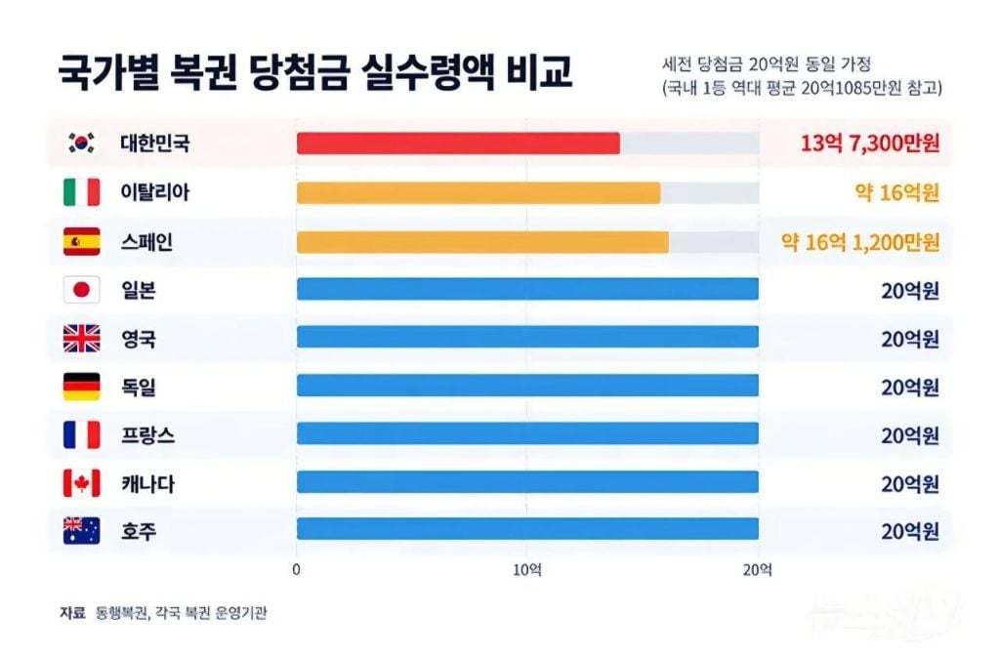

복권 20억 당첨시 국가별 실수령액
댓글
이건 딴 말인데 로또 복권 가격좀 올렸으면 좋겠음 로또 첨 나온게 02년도인데 이 당시 한게임이 2천원인데 최저 시급이 2000정도였음 대충 생각하면 오늘날 한 겜당 1만원정도 현 가격 10배임 요즘 당청금 생각하면 한겜당 2.3천원 정도 해도 되지 않을까 싶음
복권을 상승임금에 반영해서 가격을 올리라고?
ㅋㅋㅋㅋㅋㅋㅋㅋㅋㅋㅋㅋㅋ
구매금액부터 세금을 매기자는거지?
생각 한번더 하고 말해..
세금내고산거에 세금먹이기ㅋㅋㅋㅋ
복권 한줄당 가격이 우리가 싼편일걸